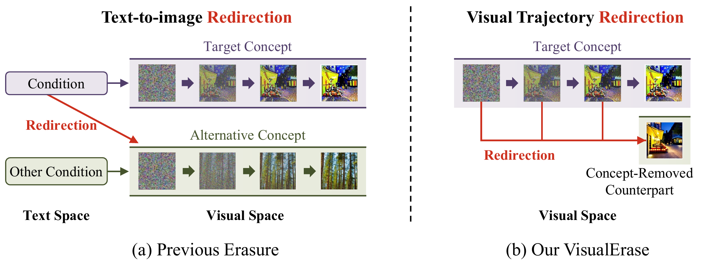
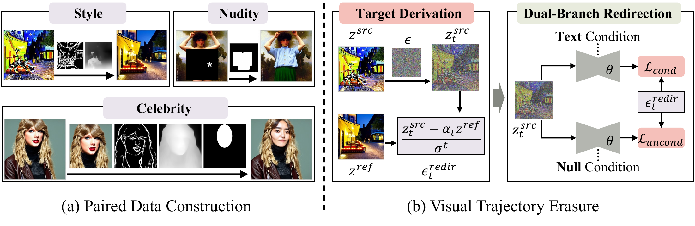
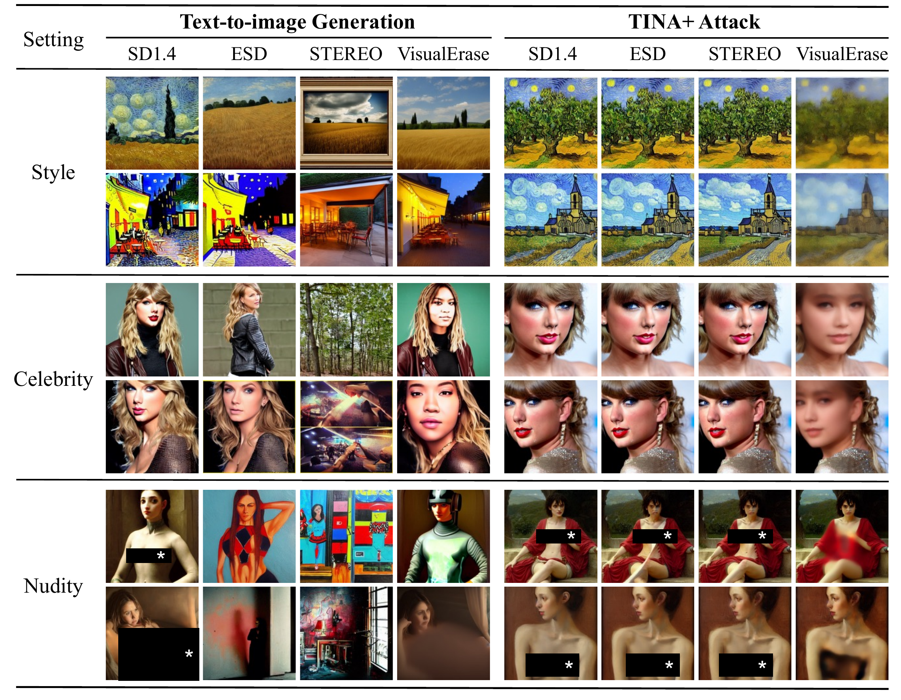

Style · maximum ASR
A visual perspective on concept erasure
VisualErase.
Dual-Branch Visual Trajectory Redirection for Robust Concept Erasure in Text-to-Image Diffusion Models
Give erasure a visual destination. Redirect both text-conditioned and text-free denoising toward concept-removed images, while retaining general generation quality.
Celebrity · maximum ASR
Nudity · maximum ASR
Attacks · including TINA+
Maximum attack success rate across the seven evaluated attacks for each task. Lower is better. Results on Stable Diffusion v1.4.
AbstractRead the full abstract
Concept erasure is essential for the safe deployment of text-to-image diffusion models, as they may reproduce harmful, copyrighted, or privacy-sensitive content learned from unconstrained large-scale data. Existing methods typically erase unwanted concepts while preserving general generation capability by redirecting target-related text-to-image mappings. However, recent studies show that erased models may still retain visual generative trajectories of target concepts, leaving them vulnerable to adversarial recovery attacks and revealing a fundamental gap between redirecting text-to-image mappings and truly removing visual knowledge. To bridge this gap, we propose VisualErase, a new paradigm that redirects concept-bearing visual generative trajectories toward explicitly defined concept-removed outcomes. To enable this redirection, we use structure-preserving image editing to construct content-aligned, concept-removed counterparts for source images, providing explicit visual endpoints that retain non-target content. We then derive a denoising target from each source-to-counterpart pair and use a dual-branch redirection loss to align both text-conditioned and unconditional predictions with this target, since conditional supervision alone does not explicitly constrain generation without textual guidance. To mitigate the adverse effects of concept erasure on non-target generation, we jointly optimize the redirection loss with a counterpart retention loss that matches denoising predictions from the frozen pretrained model. Across style, celebrity, and nudity erasure, VisualErase limits the maximum attack success rate over seven attacks to 0%, 8%, and 0.1%, respectively, while retaining general generation quality. These results highlight the importance of visual trajectory redirection for robust concept erasure beyond text-to-image mappings alone.
01
A visual perspective on concept erasure
The gap
A silenced prompt can leave a visual pathway intact.
Text-centric erasure redirects target-related prompts. Yet text-free inversion with TINA+ can still recover target concepts, exposing residual visual generation pathways.
Our approach
Define what the model should generate instead.
A content-aligned counterpart defines the desired visual endpoint. VisualErase supervises both denoising branches toward this endpoint without adversarial prompt search or attack-generated supervision.

02
Dual-Branch Visual Trajectory Redirection

Construct counterparts
Remove style, replace identity, or add clothing while preserving non-target content, structure, and composition.
Redirect both branches
Denoise the same source state toward the counterpart under both the original prompt and the empty condition.
Retain generation utility
Reuse counterparts as retention examples and match the frozen pretrained denoiser on their noised states.
εredir = (ztsrc − αt zref) / σt
ℒ = 0.5 ℒcond + 0.5 ℒuncond + ℒretain
Style and celebrity update attention projections for 1,000 steps. Nudity uses the same objective with fixed top-10% saliency-gated Non-Cross weights for 5,000 steps.
03
Robust erasure across three tasks
Across style, celebrity, and nudity erasure, VisualErase suppresses standard and adversarial concept recovery while preserving general generation quality.
| Method | ACC ↓ | PEZ ↓ | MMA ↓ | RAB ↓ | P4D ↓ | UDA ↓ | CCE ↓ | TINA+ ↓ | FID ↓ | CLIP ↑ |
|---|---|---|---|---|---|---|---|---|---|---|
| SD1.4 | 76.0 | 40.0 | 40.0 | 90.0 | 94.0 | 96.0 | 60.0 | 76.0 | 14.0 | 26.6 |
| STEREO | 0.0 | 0.0 | 0.0 | 0.0 | 0.0 | 0.0 | 4.0 | 46.0 | 15.8 | 26.0 |
| VisualErase | 0.0 | 0.0 | 0.0 | 0.0 | 0.0 | 0.0 | 0.0 | 0.0 | 14.7 | 26.5 |
ACC / ASR (%): lower is better. COCO-30K generation quality: FID ↓, CLIP ×100 ↑.
04
Qualitative comparisons

Conclusion
Robust erasure through visual trajectory redirection.
VisualErase redirects conditional and unconditional generation toward concept-removed counterparts. Across style, celebrity, and nudity erasure, it achieves zero or near-zero target recovery under seven attacks while maintaining strong generation quality. These results highlight the importance of visual trajectory redirection for robust concept erasure beyond text-to-image mappings alone.